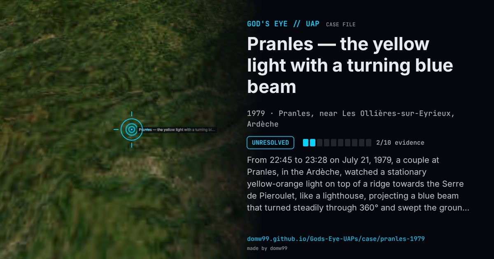

Pranles — the yellow light with a turning blue beam

From 22:45 to 23:28 on July 21, 1979, a couple at Pranles, in the Ardèche, watched a stationary yellow-orange light on top of a ridge towards the Serre de Pieroulet, like a lighthouse, projecting a blue beam that turned steadily through 360° and swept the ground. No sound was heard. As the husband, a scientist who worked on light and colour, prepared to take a photograph, it went out. Their neighbours had seen the same light in the same direction before closing their shutters at about 23:00. He reported it to the gendarmerie the next day. Re-examining the case decades later, GEIPAN found that a helicopter with a searchlight was the only plausible explanation, but a blue beam from a yellow source, turning continuously for no purpose, did not fit it. The case stays class D, unexplained, though GEIPAN notes it is near the line between unexplained and unusable because no field investigation was made at the time.
What was seen
Shape: A stationary yellow-orange light projecting a blue beam that turned through 360°
Witnesses: Two couples in neighbouring houses; the first witness a scientist who worked on light and colour
Duration: About 45 minutes
Sources
Browse
- France
- 1970s
- Unresolved
- Mass sightings
- Official government documents
- Many independent witnesses
- Lights and fireballs